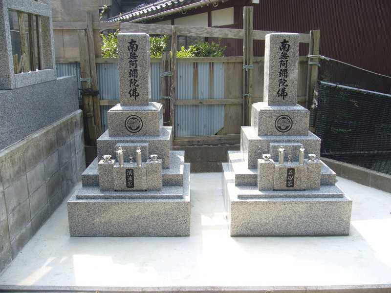
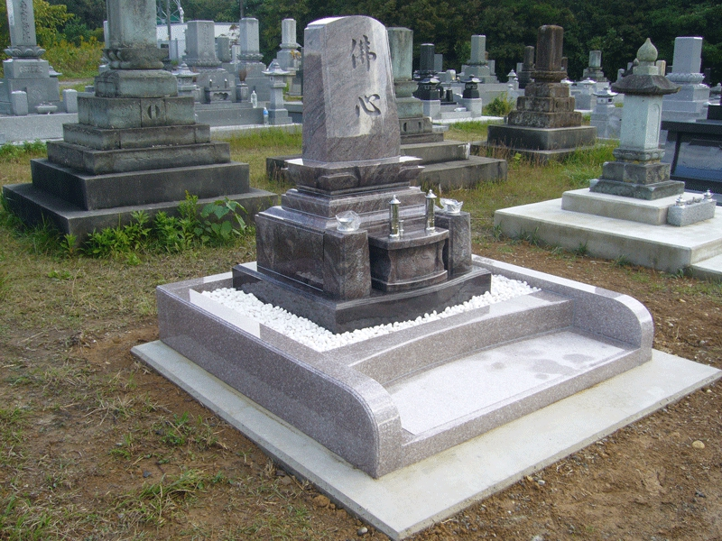
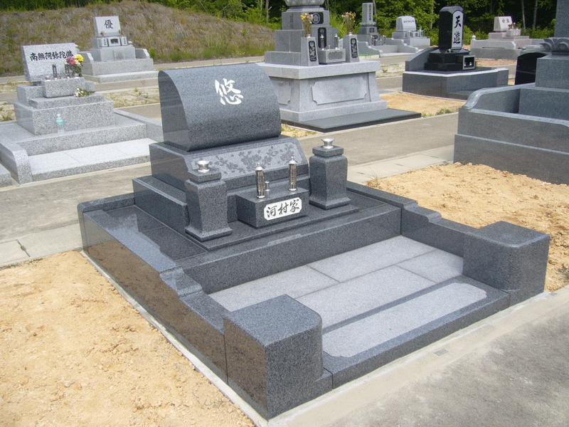
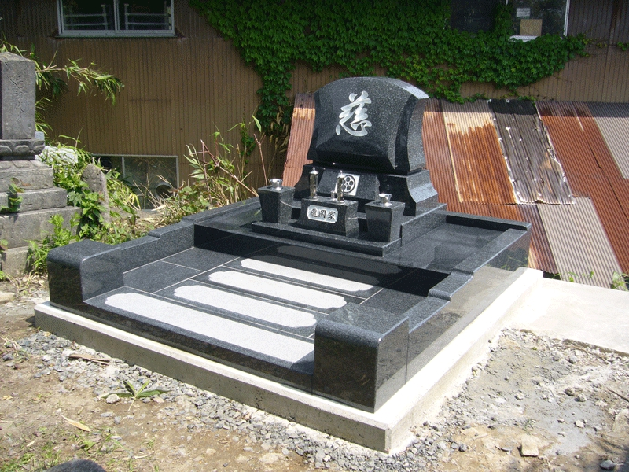

天山石・笠付型
天山石を使用した、尺角上下蓮華・笠付型のお墓
WORKS
NEW GRAVES
石の種類や墓地の広さ、ご家族の想いを受けとめながら、その場所に合うお墓を形にしてきた事例です。







和型墓石施工例
洋型墓石施工例
天山石を使用した、尺角上下蓮華・笠付型のお墓
どっしりとした形の尺角上蓮華カロート型
墓前灯篭を含め、敷地を活かして整えたお墓
ご先祖様の供養のために建てた五輪塔
デザイン墓石「凪」
デザイン墓石「響」
門柱型のお墓
和型墓石施工例
洋型墓石施工例
REPAIR & REFORM
洗浄、補修、建替え、移動などを行い、今あるお墓をこれからも大切にしていくための事例です。
GRAVE CLOSURE
お参りのこと、お客様のことを考え、事情に合わせてお墓を整理してきた事例です。
撤去すること自体が目的ではなく、今後のお参りや供養の形を考えながら、必要な範囲を確認して進めていきます。
STONE WORK
墓石のお手入れから、ペットのお墓、石を使った暮らしのしつらえまで。石の状態やご希望に合わせて手を入れてきた事例です。